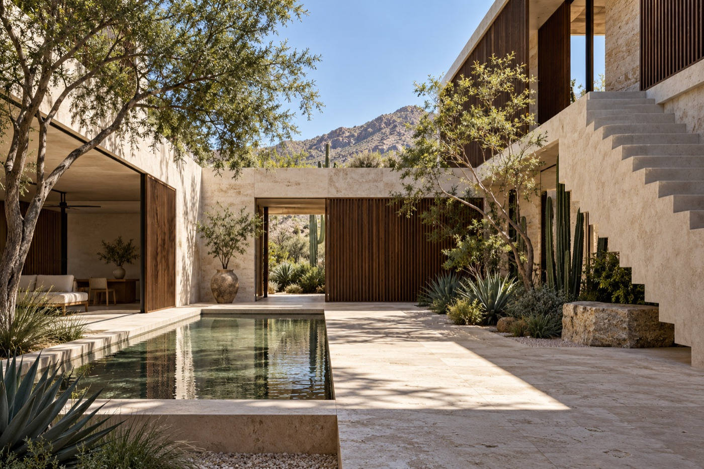

ARQUITECTURA · VIVIENDAEstudio
Estudio
Umbral
Espacios serenos, atentos a la luz y al uso cotidiano. Una demostración de cómo presentar el criterio detrás de cada proyecto.

LA IDEA DETRÁS DEL ESPACIO
Una casa organizada alrededor de la luz.
La galería convierte un proyecto en un recorrido breve: intención, decisiones de diseño, materiales y datos que ayudan a entender la obra.
Esquema ilustrativo · no es plano constructivo
Diagrama ilustrativo · dimensiones por definir
RECORRIDO INTERACTIVO
La luz como material.
La orientación y las aperturas articulan el patio y hacen que el espacio cambie a lo largo del día.
Piedra · referencia
Madera · referencia
Aplanado · referencia
Vegetación · referencia
PROCESO DE PROYECTO
Una obra, de la intención a la entrega.
Idea inicial, anteproyecto, desarrollo y coordinación se pueden presentar con claridad para que el cliente entienda los alcances antes de conversar.
01
Escuchar el lugarPrograma, terreno, orientación, normativa y presupuesto por confirmar.
02
Proponer y revisarAlternativas espaciales y decisiones validadas por el cliente.
03
Documentar el proyectoPlanos y entregables se definen según el contrato real.
PortafolioInicio + fichas de proyecto
$3,500 MXNVer paquete ↗